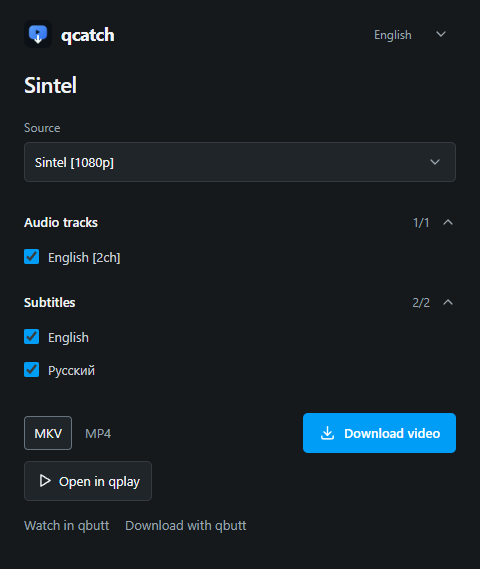

Install the extension
The installer prepares qcatch and its extension folder. In Edge or Chrome, turn on Developer mode on the extensions page, choose Load unpacked and select the folder shown after installation. Installation instructions.
Choose a video, audio tracks and subtitles found on the current page. Save them to your computer or open the video in qplay.
For Edge and Chrome. The extension currently requires manual installation.

The installer prepares qcatch and its extension folder. In Edge or Chrome, turn on Developer mode on the extensions page, choose Load unpacked and select the folder shown after installation. Installation instructions.
qcatch detects HLS, DASH and direct video streams available to the page. Save audio on its own or keep selected tracks with the video. DRM-protected videos are not supported.